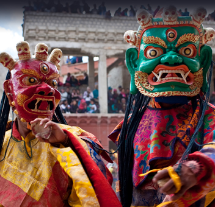

The Losar Festival:
Tibetan New Year is an important day of celebrations in Dharamshala and it is a main festival for Buddhists. The months of February and March see the hills decked up in festive finery to usher in the New Year.